<title>海天七年财报拆解</title>
<meta name="claude:viewport-fit-sides" content="cover">
<style>
/* 布局：上方是发布工具条，中间是一张“手机宽度”的白纸，就是公众号正文的样子；正文全部用行内样式，复制粘贴到公众号编辑器后格式不丢。 */
:root {
  --bg: #efebe6;        /* 页面底色：偏暖的灰 */
  --fg: #1f1a17;        /* 正文墨色 */
  --muted: #6e655e;     /* 次要文字 */
  --line: #ddd6ce;      /* 分隔线 */
  --accent: #8c3510;    /* 酱色：按钮、强调 */
  --accent-fg: #ffffff;
  --chip: #f7f4f0;      /* 浅底块 */
  --paper-edge: transparent;
  --font: -apple-system, "PingFang SC", "Noto Sans SC", "Microsoft YaHei", sans-serif;
}
@media (prefers-color-scheme: dark) {
  :root:not([data-theme="light"]) {
    --bg: #1b1714; --fg: #f1ebe5; --muted: #b3a79c; --line: #3a322c; --accent: #e0955a; --accent-fg: #1b1714; --chip: #2a231e; --paper-edge: #3a322c;
    color-scheme: dark;
  }
}
:root[data-theme="dark"] {
  --bg: #1b1714; --fg: #f1ebe5; --muted: #b3a79c; --line: #3a322c; --accent: #e0955a; --accent-fg: #1b1714; --chip: #2a231e; --paper-edge: #3a322c;
  color-scheme: dark;
}
body { background: var(--bg); color: var(--fg); font-family: var(--font); font-size: 15px; line-height: 1.6; }
.wrap { max-width: 640px; margin: 0 auto; padding-left: max(16px, env(safe-area-inset-left, 0px)); padding-right: max(16px, env(safe-area-inset-right, 0px)); }
.top { padding-block: 28px 8px; display: grid; gap: 14px; }
.eyebrow { font-size: 12px; letter-spacing: 2px; color: var(--accent); font-weight: 600; }
.top h1 { margin: 0; font-size: 22px; line-height: 1.35; text-wrap: balance; }
.top p { margin: 0; color: var(--muted); font-size: 14px; }
.actions { display: flex; flex-wrap: wrap; gap: 8px; }
button { font: inherit; font-size: 14px; font-weight: 600; border-radius: 8px; padding: 9px 14px; cursor: pointer; border: 1px solid var(--accent); background: transparent; color: var(--accent); }
button.primary { background: var(--accent); color: var(--accent-fg); }
button:focus-visible { outline: 2px solid var(--accent); outline-offset: 2px; }
.status { min-height: 1.4em; font-size: 13px; color: var(--accent); }
.meta { display: grid; gap: 10px; background: var(--chip); border-radius: 10px; padding: 14px 16px; }
.meta div { display: grid; gap: 2px; min-width: 0; }
.meta b { font-size: 12px; color: var(--muted); font-weight: 600; letter-spacing: 1px; }
.meta span { font-size: 14px; overflow-wrap: anywhere; }
.steps { margin: 0; padding-left: 20px; display: grid; gap: 4px; color: var(--muted); font-size: 14px; }
.steps code { font-size: 12.5px; background: var(--chip); padding: 1px 5px; border-radius: 4px; overflow-wrap: anywhere; }
.paper { background: #ffffff; color: #3d3632; border: 1px solid var(--paper-edge); border-radius: 4px; padding: 28px 18px 36px; margin-block: 18px 12px; box-shadow: 0 1px 3px rgba(31, 26, 23, .08); }
.paper img { display: block; width: 100%; height: auto; }
.assets { padding-block: 18px 48px; display: grid; gap: 12px; }
.assets h2 { margin: 0; font-size: 17px; }
.assets p { margin: 0; color: var(--muted); font-size: 13.5px; }
.grid { display: grid; grid-template-columns: repeat(auto-fill, minmax(140px, 1fr)); gap: 10px; }
.grid figure { margin: 0; background: var(--chip); border-radius: 8px; padding: 8px; display: grid; gap: 6px; min-width: 0; }
.grid img { width: 100%; height: 120px; object-fit: contain; background: #fff; border-radius: 4px; }
.grid figcaption { font-size: 11.5px; color: var(--muted); overflow-wrap: anywhere; }
@media (prefers-reduced-motion: no-preference) { button { transition: background-color .15s, color .15s; } }
</style>

<header class="wrap top">
  <div class="eyebrow">公众号版 · 预览</div>
  <h1>海天一年赚了 70 亿，ROE 却掉了将近一半：钱都去哪了？</h1>
  <div class="meta">
    <div><b>标题（27 字）</b><span id="title-text">海天一年赚了70亿，ROE却掉了将近一半：钱都去哪了？</span></div>
    <div><b>摘要（49 字）</b><span id="digest-text">用2019—2025年七份年报拆解酱油龙头：毛利率回来了，ROE为什么还在掉？35块的股价贵不贵？</span></div>
  </div>
  <div class="actions">
    <button class="primary" id="copy-body" type="button">复制正文</button>
    <button id="copy-title" type="button">复制标题</button>
    <button id="copy-digest" type="button">复制摘要</button>
  </div>
  <p class="status" id="status" aria-live="polite"></p>
  <ol class="steps">
    <li>点“复制正文”，粘贴到公众号后台的正文编辑区。字号、颜色、提示框会一起带过去。</li>
    <li>正文里每张图的位置会显示一个虚线框，写着该放哪张图。把对应图片上传到那里，再删掉虚线框。</li>
    <li>封面用 <code>00_封面_2.35比1.png</code>；分享卡片的方形裁切可参考 <code>00_封面_1比1.png</code>。</li>
  </ol>
</header>

<main class="wrap">
<article class="paper" id="article">

<p style="margin:0 0 20px;font-size:16px;line-height:1.8;letter-spacing:0.5px;color:#3d3632;text-align:justify;">2025 年，海天味业交出了一份漂亮的成绩单：一年卖了 288.7 亿元的酱油、蚝油和调味酱，赚了 <strong style="color:#8c3510;">70.4 亿元</strong>，利润创下新高。</p>
<p style="margin:0 0 20px;font-size:16px;line-height:1.8;letter-spacing:0.5px;color:#3d3632;text-align:justify;">但站在股东的位置算一笔账，会发现一件有点反常的事。</p>
<p style="margin:0 0 20px;font-size:16px;line-height:1.8;letter-spacing:0.5px;color:#3d3632;text-align:justify;">2019 年，股东每投入 100 块钱，海天一年能帮你赚回 35 块；到了 2025 年，只剩 <strong style="color:#8c3510;">19.5 块</strong>。</p>
<p style="margin:0 0 20px;font-size:16px;line-height:1.8;letter-spacing:0.5px;color:#3d3632;text-align:justify;">这个指标叫 ROE（净资产收益率），很多价值投资者把它当作最重要的指标。利润在涨，ROE 却掉了将近一半。钱都去哪了？现在 35 块的股价，贵不贵？</p>
<p style="margin:0 0 20px;font-size:16px;line-height:1.8;letter-spacing:0.5px;color:#3d3632;text-align:justify;">我把海天 2019—2025 年的七份年报拆了一遍，先看结论。</p>
<p style="margin:0 0 24px;">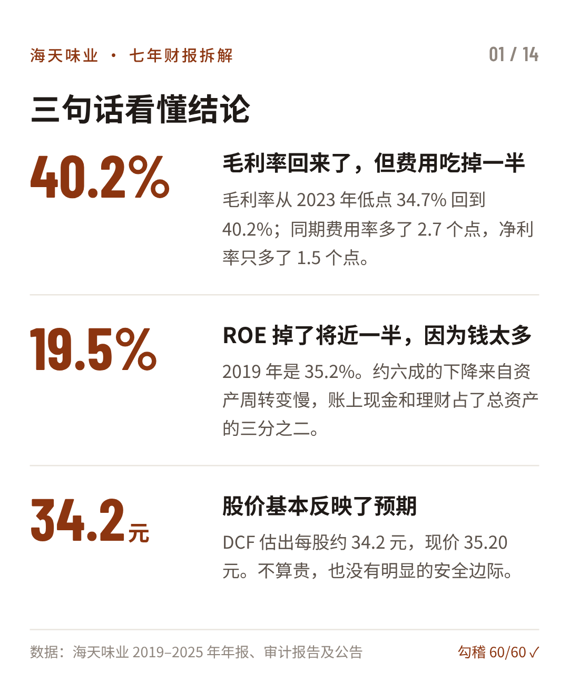</p>

<p style="margin:44px 0 4px;font-size:14px;font-weight:bold;letter-spacing:2px;color:#8c3510;">01</p>
<p style="margin:0 0 18px;font-size:20px;font-weight:bold;line-height:1.5;color:#1f1a17;">数据从哪来</p>
<p style="margin:0 0 20px;font-size:16px;line-height:1.8;letter-spacing:0.5px;color:#3d3632;text-align:justify;">后面每个结论都建立在数字上，所以先交代数字从哪来。</p>
<p style="margin:0 0 20px;font-size:16px;line-height:1.8;letter-spacing:0.5px;color:#3d3632;text-align:justify;">我从年报里整理了 98 个财务数字：收入、成本、四项费用、利润、现金流、资产和净资产。其中 92 个直接取自年报、审计报告或公司公告原文，精确到分；剩下 6 个来自媒体转述或第三方数据推算，主要是几年的资本开支，只影响个别估值输入。</p>
<p style="margin:0 0 20px;font-size:16px;line-height:1.8;letter-spacing:0.5px;color:#3d3632;text-align:justify;">录完之后，我做了一遍审计里常说的“勾稽”：用这些数字反算出 60 个同比增速和毛利率，再和公司自己在年报里披露的数字逐一对比。<strong style="color:#1f1a17;">60 项全部对上</strong>，误差都在 0.15 个百分点以内。核对中还发现，有媒体把 2025 年的管理费用写成了 7.02 亿元，年报原文是 7.00 亿元。</p>
<p style="margin:0 0 24px;">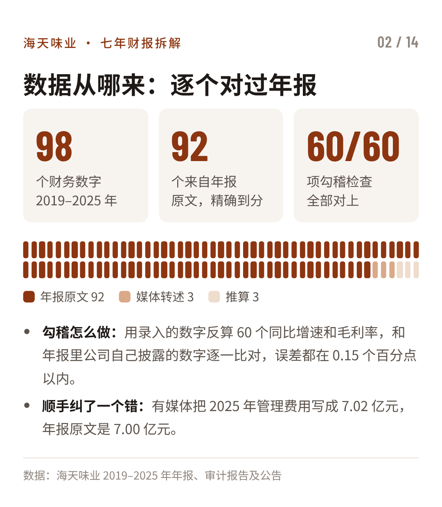</p>
<p style="margin:0 0 20px;font-size:16px;line-height:1.8;letter-spacing:0.5px;color:#3d3632;text-align:justify;">另外两个口径提醒：2020 年起，新收入准则把运费从销售费用挪进了营业成本，所以 2019 年的毛利率和之后不完全可比；2025 年报重述了 2024 年的部分数字，本文用原报数，差别很小。</p>

<p style="margin:44px 0 4px;font-size:14px;font-weight:bold;letter-spacing:2px;color:#8c3510;">02</p>
<p style="margin:0 0 18px;font-size:20px;font-weight:bold;line-height:1.5;color:#1f1a17;">生意规模：收入稳稳地涨，利润跑得慢</p>
<p style="margin:0 0 20px;font-size:16px;line-height:1.8;letter-spacing:0.5px;color:#3d3632;text-align:justify;">2019 到 2025 年，营收从 198 亿元涨到 289 亿元，每年平均增长 6.5%；归母净利润从 53.5 亿元涨到 70.4 亿元，每年平均只增长 4.7%。</p>
<p style="margin:0 0 24px;">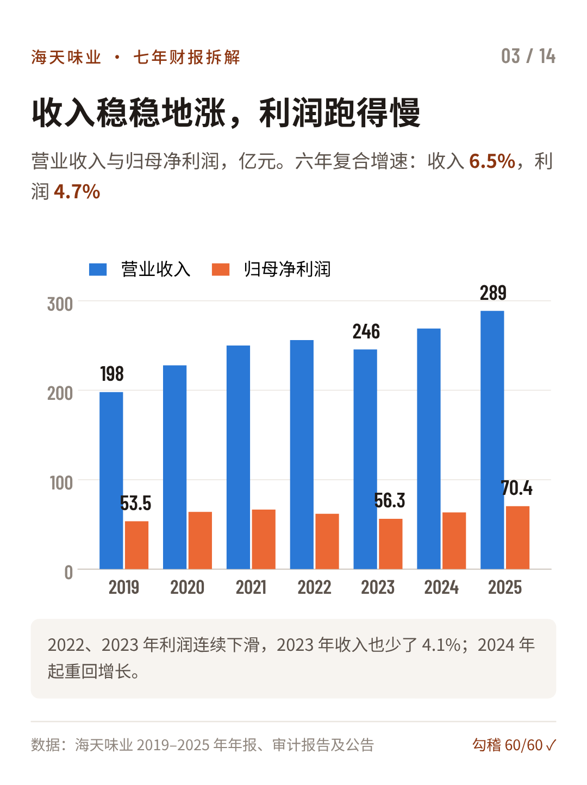</p>
<p style="margin:0 0 20px;font-size:16px;line-height:1.8;letter-spacing:0.5px;color:#3d3632;text-align:justify;">中间有个坑：2022、2023 年利润连续两年下滑，2023 年连收入也少了 4.1%，2024 年起才回到增长轨道。</p>
<p style="margin:0 0 20px;font-size:16px;line-height:1.8;letter-spacing:0.5px;color:#3d3632;text-align:justify;">利润跑输收入，说明每卖 100 块钱，留下的利润变少了：净利率从 27.0% 降到 24.4%。问题出在哪？要拆成两层看，一层是毛利率，一层是费用。</p>

<p style="margin:44px 0 4px;font-size:14px;font-weight:bold;letter-spacing:2px;color:#8c3510;">03</p>
<p style="margin:0 0 18px;font-size:20px;font-weight:bold;line-height:1.5;color:#1f1a17;">毛利率：先跌后涨，看原材料的脸色</p>
<p style="margin:0 0 20px;font-size:16px;line-height:1.8;letter-spacing:0.5px;color:#3d3632;text-align:justify;">先解释一下毛利率：卖 100 块钱的酱油，扣掉黄豆、瓶子、工厂成本和运费，还剩多少钱。</p>
<p style="margin:0 0 20px;font-size:16px;line-height:1.8;letter-spacing:0.5px;color:#3d3632;text-align:justify;">海天的毛利率走出了一个“V”字：2019 年 45.4%，2023 年跌到 34.7%，2025 年又回到 <strong style="color:#8c3510;">40.2%</strong>。</p>
<p style="margin:0 0 24px;">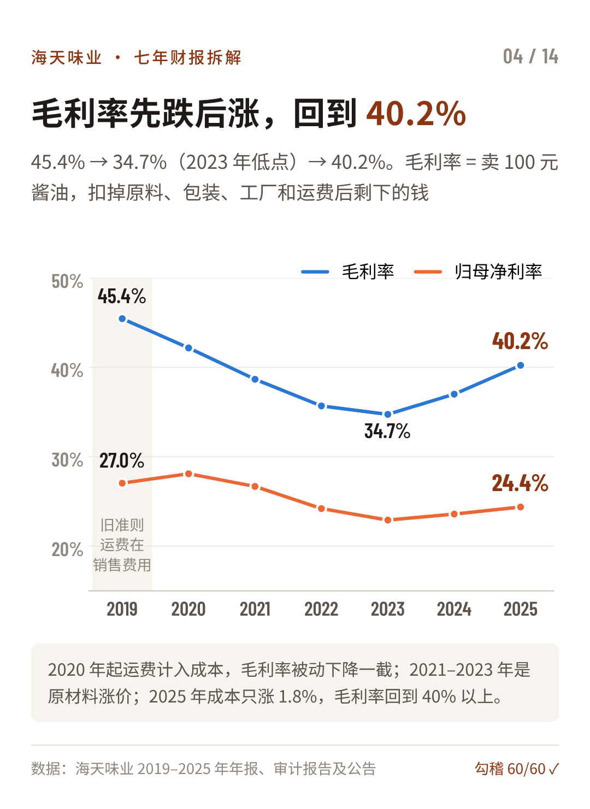</p>
<p style="margin:0 0 20px;font-size:16px;line-height:1.8;letter-spacing:0.5px;color:#3d3632;text-align:justify;">这条曲线分三段看：</p>
<p style="margin:0 0 14px;font-size:16px;line-height:1.8;letter-spacing:0.5px;color:#3d3632;text-align:justify;"><strong style="color:#1f1a17;">2019→2020：</strong>有一部分是会计口径变化。新准则把运费算进成本，毛利率被动下降一截，不全是生意变差。</p>
<p style="margin:0 0 14px;font-size:16px;line-height:1.8;letter-spacing:0.5px;color:#3d3632;text-align:justify;"><strong style="color:#1f1a17;">2020→2023：</strong>成本涨得比收入快。2021 年成本涨了 16.4%，收入只涨 9.7%；2022 年成本涨 7.4%，收入只涨 2.4%。主要原因是大豆等原材料涨价。</p>
<p style="margin:0 0 20px;font-size:16px;line-height:1.8;letter-spacing:0.5px;color:#3d3632;text-align:justify;"><strong style="color:#1f1a17;">2023→2025：</strong>原材料便宜了。2025 年营业成本只增长约 1.8%，收入增长 7.3%，毛利率回到 40% 以上。</p>
<section style="margin:0 0 20px;padding:14px 16px;background-color:#f7f4f0;border-radius:6px;"><p style="margin:0 0 6px;font-size:14px;font-weight:bold;letter-spacing:1px;color:#8c3510;">划重点</p><p style="margin:0;font-size:15px;line-height:1.75;letter-spacing:0.5px;color:#3d3632;">海天的毛利率很大程度上看原材料的脸色。40% 能不能守住，要看大豆、包材价格会不会再涨回去。</p></section>

<p style="margin:44px 0 4px;font-size:14px;font-weight:bold;letter-spacing:2px;color:#8c3510;">04</p>
<p style="margin:0 0 18px;font-size:20px;font-weight:bold;line-height:1.5;color:#1f1a17;">费用：省下来的毛利，一半又花出去了</p>
<p style="margin:0 0 20px;font-size:16px;line-height:1.8;letter-spacing:0.5px;color:#3d3632;text-align:justify;">2023 到 2025 年，毛利率回升了 5.5 个百分点，净利率却只回升了 1.5 个点。中间的差距去了哪里，看这张图：</p>
<p style="margin:0 0 24px;">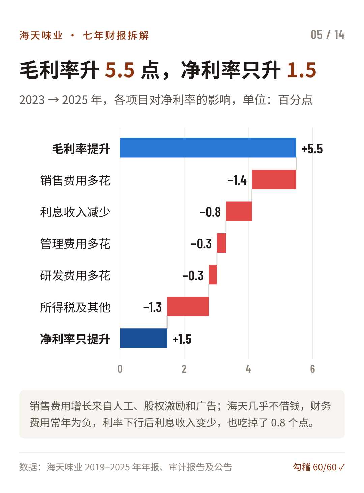</p>
<p style="margin:0 0 14px;font-size:16px;line-height:1.8;letter-spacing:0.5px;color:#3d3632;text-align:justify;"><strong style="color:#1f1a17;">销售费用多花了 1.4 个点。</strong>2024、2025 年销售费用分别增长 24.7% 和 18.7%，远快于收入。年报的解释是人工、股权激励和广告投入增加。</p>
<p style="margin:0 0 14px;font-size:16px;line-height:1.8;letter-spacing:0.5px;color:#3d3632;text-align:justify;"><strong style="color:#1f1a17;">利息收入变少，又吃掉 0.8 个点。</strong>海天几乎不借钱，账上大量现金每年能赚几亿利息，财务费用常年是负数，相当于给利润“加分”。但利率在下行，2024 年存款利息收入 5.28 亿元，比上一年少了 0.77 亿元。</p>
<p style="margin:0 0 14px;font-size:16px;line-height:1.8;letter-spacing:0.5px;color:#3d3632;text-align:justify;"><strong style="color:#1f1a17;">管理费用和研发费用各多了约 0.3 个点。</strong></p>
<p style="margin:0 0 20px;font-size:16px;line-height:1.8;letter-spacing:0.5px;color:#3d3632;text-align:justify;"><strong style="color:#1f1a17;">剩下约 1.3 个点</strong>是所得税、投资收益等其他项目合在一起的变化。</p>
<p style="margin:0 0 20px;font-size:16px;line-height:1.8;letter-spacing:0.5px;color:#3d3632;text-align:justify;">这笔费用怎么看？如果广告和团队投入换来了更快的收入增长，费用率自然会降下来；如果收入增速停在 7% 左右，费用却继续两位数增长，净利率就会被压住。这是接下来最值得盯的地方之一。</p>

<p style="margin:44px 0 4px;font-size:14px;font-weight:bold;letter-spacing:2px;color:#8c3510;">05</p>
<p style="margin:0 0 18px;font-size:20px;font-weight:bold;line-height:1.5;color:#1f1a17;">杜邦拆解：ROE 为什么掉了将近一半</p>
<p style="margin:0 0 20px;font-size:16px;line-height:1.8;letter-spacing:0.5px;color:#3d3632;text-align:justify;">回到开头的问题。这里要用一个经典工具：杜邦分析。它把 ROE 拆成三个数相乘。</p>
<p style="margin:0 0 20px;font-size:16px;line-height:1.8;letter-spacing:0.5px;color:#3d3632;text-align:justify;">打个比方，你开了一家酱油铺：<strong style="color:#1f1a17;">赚钱能力</strong>是每卖 100 块钱最后落袋多少；<strong style="color:#1f1a17;">周转效率</strong>是每 1 块钱的家当一年能做多少生意；<strong style="color:#1f1a17;">杠杆</strong>是除了自己的钱，还用了多少别人的钱，比如欠供应商的货款。三个数乘起来，就是你自己投进去的每一块钱，一年能赚回多少。</p>
<p style="margin:0 0 24px;">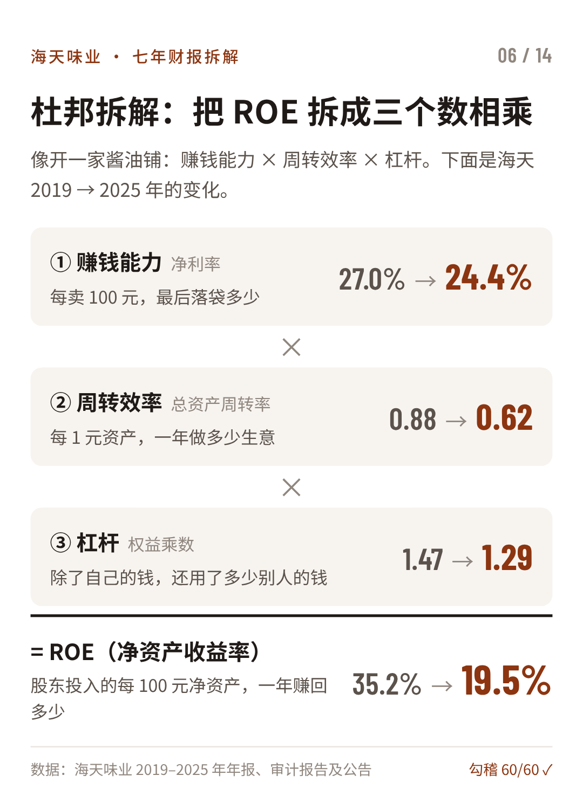</p>
<p style="margin:0 0 20px;font-size:16px;line-height:1.8;letter-spacing:0.5px;color:#3d3632;text-align:justify;">把海天七年的数据代进去，三个因子都在往下走：</p>
<p style="margin:0 0 24px;">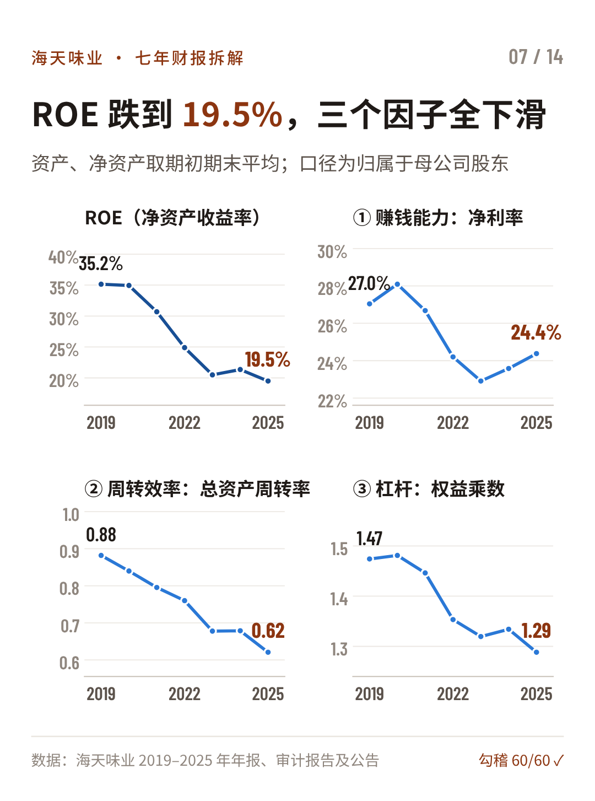</p>
<p style="margin:0 0 20px;font-size:16px;line-height:1.8;letter-spacing:0.5px;color:#3d3632;text-align:justify;">但下降的幅度差很多。我用对数法把 ROE 下降的 15.7 个百分点分摊到三个因子上。这种算法的好处是三项加起来正好等于总变化，也不受计算顺序影响。</p>
<p style="margin:0 0 24px;">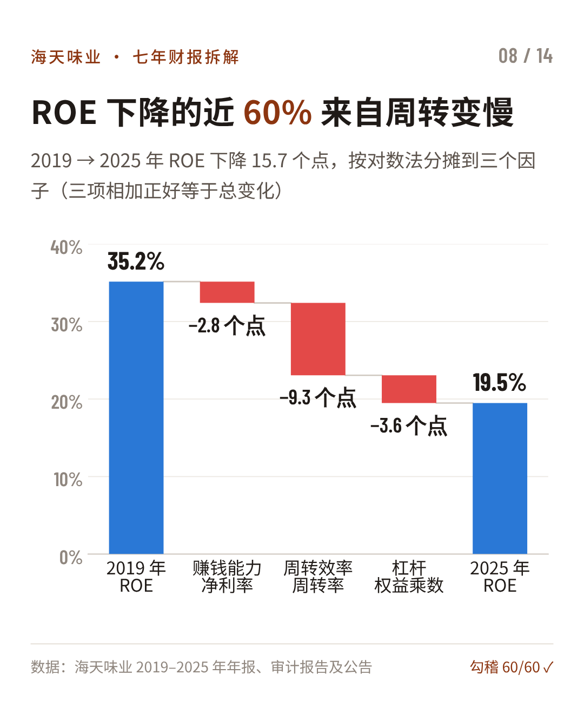</p>
<p style="margin:0 0 20px;font-size:16px;line-height:1.8;letter-spacing:0.5px;color:#3d3632;text-align:justify;">结果很清楚：<strong style="color:#8c3510;">将近六成的下降来自周转变慢</strong>，赚钱能力的下降只贡献了 2.8 个点。</p>
<p style="margin:0 0 20px;font-size:16px;line-height:1.8;letter-spacing:0.5px;color:#3d3632;text-align:justify;">为什么周转变慢？一句话：<strong style="color:#1f1a17;">钱太多了</strong>。七年里海天的营收涨了 46%，平均总资产却从 224 亿元涨到 465 亿元，翻了一倍多。多出来的资产，大部分是现金和理财。</p>
<p style="margin:0 0 24px;">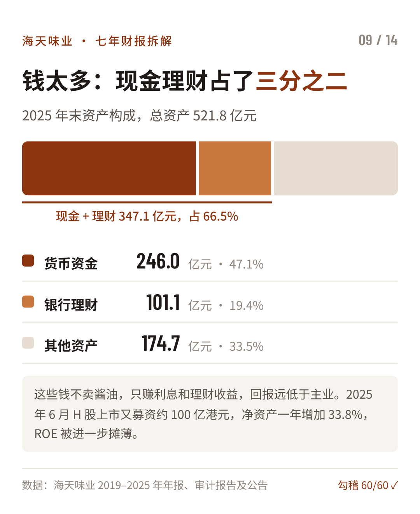</p>
<p style="margin:0 0 20px;font-size:16px;line-height:1.8;letter-spacing:0.5px;color:#3d3632;text-align:justify;">2025 年末，海天账上有货币资金 246 亿元、银行理财 101 亿元，合计 347 亿元，占总资产的三分之二。这些钱不卖酱油，只赚利息和理财收益，收益率远低于主业。</p>
<p style="margin:0 0 20px;font-size:16px;line-height:1.8;letter-spacing:0.5px;color:#3d3632;text-align:justify;">2025 年 6 月海天又在香港上市，募资约 100 亿港元，净资产一年增加了三分之一，ROE 被进一步摊薄：2025 年利润增长了 11%，ROE 反而从 21.4% 降到 19.5%。</p>
<section style="margin:0 0 20px;padding:14px 16px;background-color:#f7f4f0;border-radius:6px;"><p style="margin:0 0 6px;font-size:14px;font-weight:bold;letter-spacing:1px;color:#8c3510;">划重点</p><p style="margin:0;font-size:15px;line-height:1.75;letter-spacing:0.5px;color:#3d3632;">海天的 ROE 下滑，主要不是生意变差了，而是钱太多、用不完。就像一家店的老板把三分之二的本钱都存了银行，店里生意再好，整体回报也会被拖低。想让 ROE 回升，最直接的办法是把多余的现金还给股东（分红、回购），或者找到回报更高的投资方向。</p></section>
<p style="margin:0 0 20px;font-size:14px;line-height:1.75;letter-spacing:0.5px;color:#8f867e;text-align:justify;">严谨起见补一句：本文只拿到了 2025 年末的现金数据。要严格证明“周转变慢主要因为现金堆积”，还需要补齐往年数据，把经营资产和现金类资产分开算。</p>

<p style="margin:44px 0 4px;font-size:14px;font-weight:bold;letter-spacing:2px;color:#8c3510;">06</p>
<p style="margin:0 0 18px;font-size:20px;font-weight:bold;line-height:1.5;color:#1f1a17;">现金流：利润是真金白银吗</p>
<p style="margin:0 0 20px;font-size:16px;line-height:1.8;letter-spacing:0.5px;color:#3d3632;text-align:justify;">看利润质量，最直接的是两个指标：</p>
<p style="margin:0 0 14px;font-size:16px;line-height:1.8;letter-spacing:0.5px;color:#3d3632;text-align:justify;"><strong style="color:#1f1a17;">经营现金流 ÷ 净利润：</strong>大于 1，说明赚的钱真的收回来了。</p>
<p style="margin:0 0 20px;font-size:16px;line-height:1.8;letter-spacing:0.5px;color:#3d3632;text-align:justify;"><strong style="color:#1f1a17;">自由现金流 = 经营现金流 − 资本开支：</strong>扣掉建厂、买设备之后，公司真正能自由支配、分给股东的钱。</p>
<p style="margin:0 0 24px;">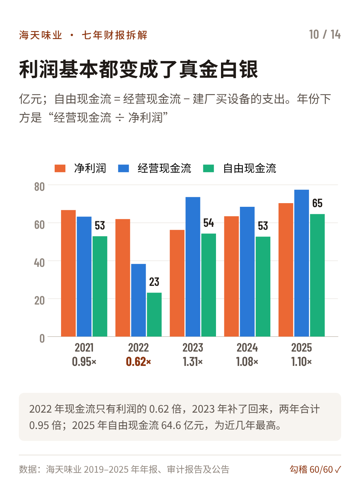</p>
<p style="margin:0 0 20px;font-size:16px;line-height:1.8;letter-spacing:0.5px;color:#3d3632;text-align:justify;">七年里，除了 2021 年（0.95 倍）和 2022 年（0.62 倍），经营现金流都高于利润。2022 年的缺口在 2023 年补了回来，两年合计，现金流是利润的 0.95 倍。</p>
<p style="margin:0 0 20px;font-size:16px;line-height:1.8;letter-spacing:0.5px;color:#3d3632;text-align:justify;">资本开支在 2023 年见顶（19.2 亿元），2025 年降到 12.8 亿元，自由现金流达到 64.6 亿元，是近几年最高。一句话：<strong style="color:#1f1a17;">海天的利润质量过硬，赚的钱基本都收回来了。</strong></p>

<p style="margin:44px 0 4px;font-size:14px;font-weight:bold;letter-spacing:2px;color:#8c3510;">07</p>
<p style="margin:0 0 18px;font-size:20px;font-weight:bold;line-height:1.5;color:#1f1a17;">DCF 估值：35 块钱贵不贵</p>
<p style="margin:0 0 20px;font-size:16px;line-height:1.8;letter-spacing:0.5px;color:#3d3632;text-align:justify;">最后一个问题，用 DCF（现金流折现）来回答。原理不复杂：一只会下蛋的母鸡值多少钱，取决于它将来能下多少蛋，再把将来的蛋按“时间价值”折算成今天的钱。</p>
<p style="margin:0 0 24px;">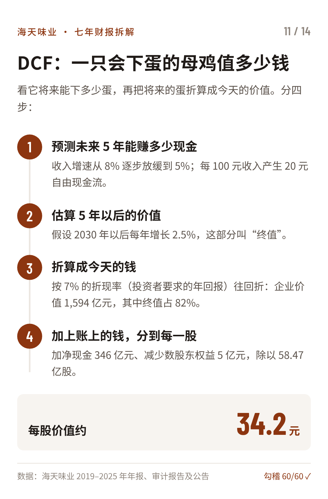</p>
<p style="margin:0 0 20px;font-size:16px;line-height:1.8;letter-spacing:0.5px;color:#3d3632;text-align:justify;">几个关键假设：</p>
<p style="margin:0 0 14px;font-size:16px;line-height:1.8;letter-spacing:0.5px;color:#3d3632;text-align:justify;"><strong style="color:#1f1a17;">收入增速：</strong>2026、2027 年 8%，之后逐年放缓到 5%。2026 年参考了券商的一致预期。</p>
<p style="margin:0 0 14px;font-size:16px;line-height:1.8;letter-spacing:0.5px;color:#3d3632;text-align:justify;"><strong style="color:#1f1a17;">自由现金流率：</strong>20%，也就是每 100 块收入产生 20 块自由现金流，参考 2023—2025 年的平均水平。</p>
<p style="margin:0 0 14px;font-size:16px;line-height:1.8;letter-spacing:0.5px;color:#3d3632;text-align:justify;"><strong style="color:#1f1a17;">折现率（WACC）：</strong>7%。可以理解为投资者要求的年回报率，要求越高，将来的钱今天越不值钱。</p>
<p style="margin:0 0 20px;font-size:16px;line-height:1.8;letter-spacing:0.5px;color:#3d3632;text-align:justify;"><strong style="color:#1f1a17;">永续增长率：</strong>2.5%，即 5 年以后每年的长期增长。</p>
<p style="margin:0 0 20px;font-size:16px;line-height:1.8;letter-spacing:0.5px;color:#3d3632;text-align:justify;">还有两处技术处理。第一，海天的利息收入已经算在经营现金流里，估值时又单独加回了账上现金，为避免重复计算，先从现金流里扣掉利息收入。第二，估值日在 2025 年底，股价是 2026 年 11 月 2 日的，中间海天还派了每股 0.80 元的红利，所以先把估值滚动到股价日、再扣掉这笔红利，才和股价比较。</p>
<p style="margin:0 0 24px;">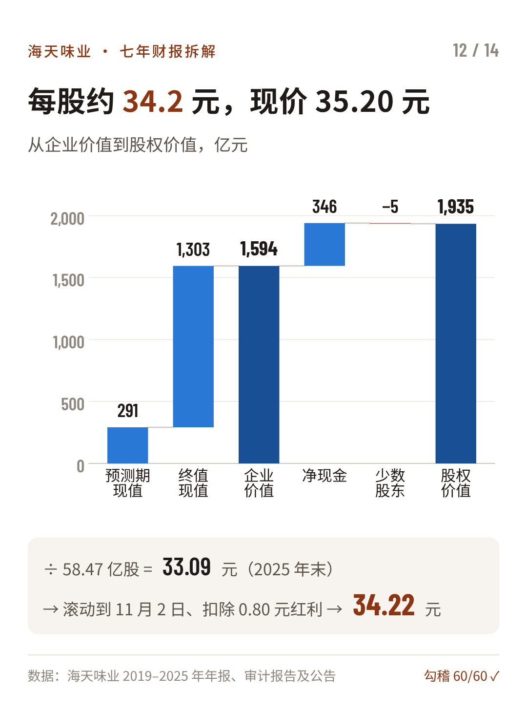</p>
<p style="margin:0 0 20px;font-size:16px;line-height:1.8;letter-spacing:0.5px;color:#3d3632;text-align:justify;">算下来，海天每股价值约 <strong style="color:#8c3510;">34.2 元</strong>，比 11 月 2 日的收盘价 35.20 元低 2.8%，基本就在现价附近。</p>
<p style="margin:0 0 20px;font-size:16px;line-height:1.8;letter-spacing:0.5px;color:#3d3632;text-align:justify;">不过 DCF 有个软肋：结论对假设非常敏感。终值占了企业价值的 82%，也就是说，估值的八成来自 2030 年以后，取决于你相信它能走多远。下面这张表展示了折现率和永续增长率变化时，每股价值怎么变：</p>
<p style="margin:0 0 24px;">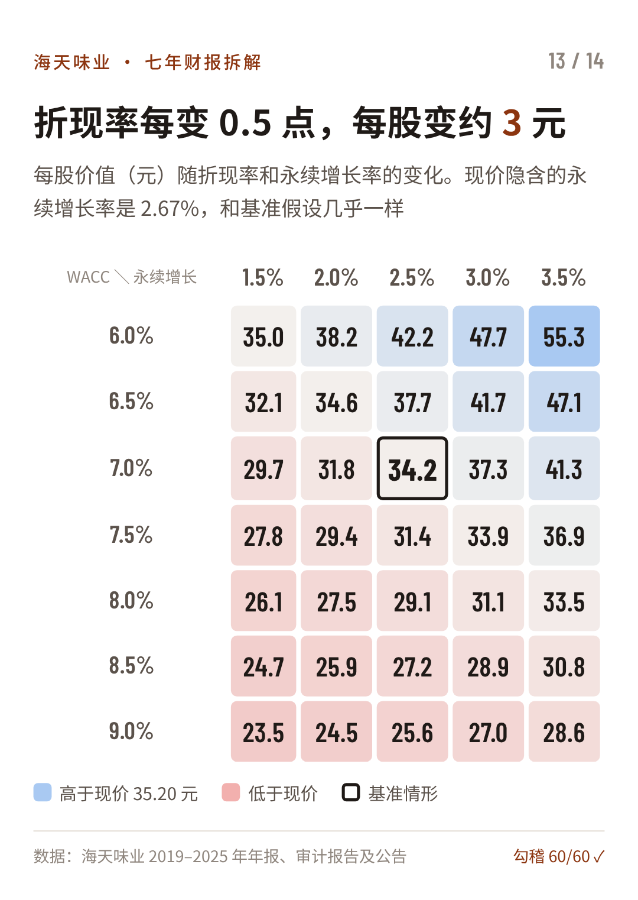</p>
<p style="margin:0 0 20px;font-size:16px;line-height:1.8;letter-spacing:0.5px;color:#3d3632;text-align:justify;">折现率每变动 0.5 个百分点，每股价值就变动约 3 元。在比较合理的假设范围里（折现率 6.5%—7.5%，永续增长 2%—3%），每股价值在 29.4—41.7 元之间，现价正好落在中间。</p>
<p style="margin:0 0 20px;font-size:16px;line-height:1.8;letter-spacing:0.5px;color:#3d3632;text-align:justify;">换个角度问：35.20 元的股价，隐含了什么预期？反推回去，现价相当于假设永续增长率 2.67%、自由现金流率 20.7%，和本文的基准假设几乎一样。</p>
<section style="margin:0 0 20px;padding:14px 16px;background-color:#f7f4f0;border-radius:6px;"><p style="margin:0 0 6px;font-size:14px;font-weight:bold;letter-spacing:1px;color:#8c3510;">划重点</p><p style="margin:0;font-size:15px;line-height:1.75;letter-spacing:0.5px;color:#3d3632;">现价已经反映了“收入每年中高个位数增长、现金流率维持 20%”的预期。不算贵，也谈不上便宜，没有明显的安全边际。</p></section>

<p style="margin:44px 0 4px;font-size:14px;font-weight:bold;letter-spacing:2px;color:#8c3510;">08</p>
<p style="margin:0 0 18px;font-size:20px;font-weight:bold;line-height:1.5;color:#1f1a17;">结论：盯住四个信号</p>
<p style="margin:0 0 20px;font-size:16px;line-height:1.8;letter-spacing:0.5px;color:#3d3632;text-align:justify;">回到开头，三句话总结：</p>
<p style="margin:0 0 14px;font-size:16px;line-height:1.8;letter-spacing:0.5px;color:#3d3632;text-align:justify;"><strong style="color:#8c3510;">1.</strong> 毛利率已经修复到 40%，但新增的费用吃掉了一半。</p>
<p style="margin:0 0 14px;font-size:16px;line-height:1.8;letter-spacing:0.5px;color:#3d3632;text-align:justify;"><strong style="color:#8c3510;">2.</strong> ROE 掉了将近一半，主要因为账上现金太多、周转变慢，而不是生意变差。</p>
<p style="margin:0 0 20px;font-size:16px;line-height:1.8;letter-spacing:0.5px;color:#3d3632;text-align:justify;"><strong style="color:#8c3510;">3.</strong> 按现在的假设，35 块左右的股价基本合理，没有明显的低估。</p>
<p style="margin:0 0 20px;font-size:16px;line-height:1.8;letter-spacing:0.5px;color:#3d3632;text-align:justify;">接下来，这四个信号决定了故事往哪个方向走：</p>
<p style="margin:0 0 24px;">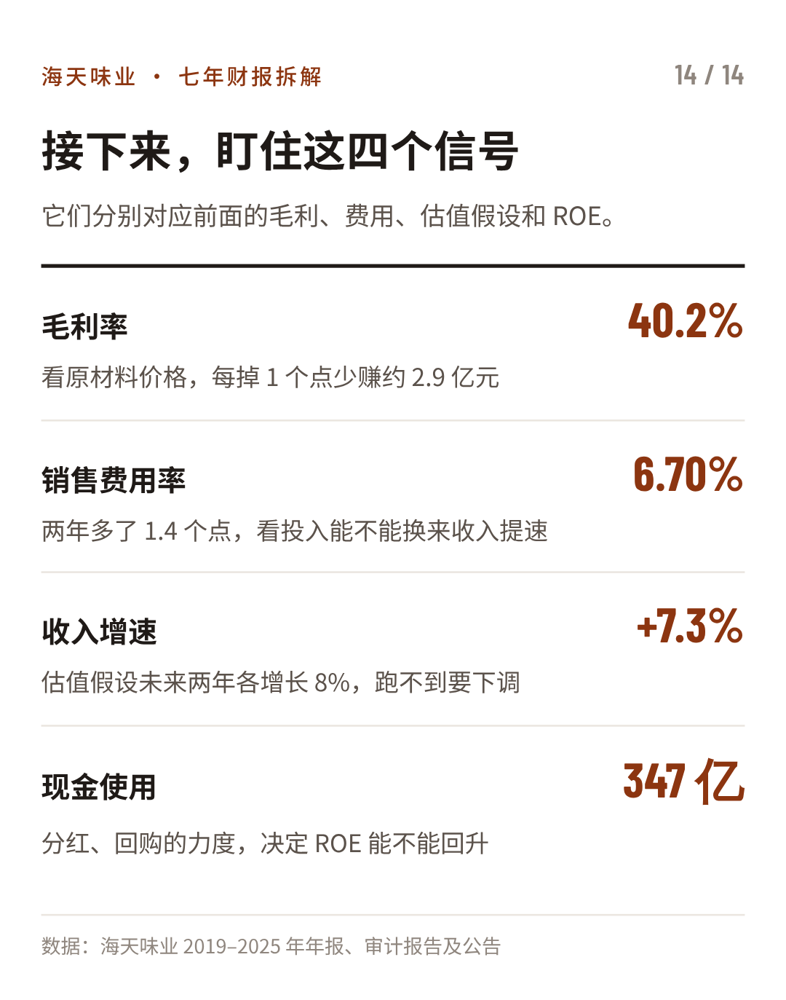</p>
<p style="margin:0 0 20px;font-size:16px;line-height:1.8;letter-spacing:0.5px;color:#3d3632;text-align:justify;">如果毛利率守住 40%、费用投入带来收入提速，同时公司加大分红和回购，当前估值就有向上的空间。反过来，如果原材料涨价和费用上升同时发生，利润率和估值都会承压。</p>

<section style="margin:40px 0 0;padding-top:16px;border-top:1px solid #ebe6e0;">
<p style="margin:0 0 10px;font-size:13px;line-height:1.75;color:#8f867e;text-align:justify;"><strong style="color:#5b524b;">数据说明：</strong>本文数据来自海天味业 2019—2025 年年度报告、2024 与 2025 年度审计报告及公司公告。98 个数据点中 92 个为原文数字，2020 年研发费用、2025 年归母净资产与资本开支来自媒体转述，2020—2022 年资本开支由第三方数据推算。股价为 2026 年 11 月 2 日收盘价。</p>
<p style="margin:0;font-size:13px;line-height:1.75;color:#8f867e;text-align:justify;"><strong style="color:#5b524b;">免责声明：</strong>本文仅为基于公开财务数据的分析，不构成任何投资建议。</p>
</section>

</article>

<div class="actions">
  <button class="primary" id="copy-body-2" type="button">复制正文</button>
</div>
<p class="status" id="status-2" aria-live="polite"></p>
</main>

<section class="wrap assets" aria-labelledby="assets-title">
  <h2 id="assets-title">配图清单（16 张）</h2>
  <p>按编号插入正文。图片保存在仓库 <code>haitian/wechat/images/</code>；在本页也可以长按或右键另存。宽度均为 1080 像素，适合公众号。</p>
  <div class="grid" id="grid"></div>
</section>

<script>
(function () {
  var files = ["00_封面_2.35比1.png", "00_封面_1比1.png", "01_三句话结论.png", "02_数据从哪来.png", "03_营收与利润.png",
    "04_毛利率.png", "05_毛利到净利.png", "06_杜邦拆解方法.png", "07_杜邦三因子.png", "08_ROE归因.png", "09_资产构成.png",
    "10_现金流.png", "11_DCF方法.png", "12_DCF结果.png", "13_DCF敏感性.png", "14_跟踪信号.png"];
  var grid = document.getElementById("grid");
  files.forEach(function (f) {
    var fig = document.createElement("figure");
    var img = document.createElement("img");
    img.src = "images/" + f; img.alt = f; img.loading = "lazy";
    var cap = document.createElement("figcaption"); cap.textContent = f;
    fig.appendChild(img); fig.appendChild(cap); grid.appendChild(fig);
  });

  function say(id, msg) { var el = document.getElementById(id); if (el) el.textContent = msg; }

  function articleForPaste() {
    var clone = document.getElementById("article").cloneNode(true);
    clone.querySelectorAll("img").forEach(function (img) {
      var p = document.createElement("p");
      p.setAttribute("style", "margin:0 0 24px;padding:14px 12px;border:1px dashed #c9b7a6;border-radius:6px;font-size:14px;line-height:1.6;color:#8c3510;text-align:center;");
      p.textContent = "【在这里插入图片：" + img.getAttribute("data-file") + "】";
      img.parentNode.replaceWith(p);
    });
    return clone;
  }

  function fallbackCopy(node) {
    var holder = document.createElement("div");
    holder.setAttribute("contenteditable", "true");
    holder.style.position = "fixed"; holder.style.left = "-9999px"; holder.style.top = "0";
    holder.appendChild(node);
    document.body.appendChild(holder);
    var range = document.createRange(); range.selectNodeContents(holder);
    var sel = window.getSelection(); sel.removeAllRanges(); sel.addRange(range);
    var ok = false;
    try { ok = document.execCommand("copy"); } catch (e) { ok = false; }
    sel.removeAllRanges(); holder.remove();
    return ok;
  }

  function copyBody(statusId) {
    var clone = articleForPaste();
    var html = clone.innerHTML;
    var text = clone.innerText;
    var done = function () { say(statusId, "已复制正文。粘贴到公众号编辑器后，按虚线框里的文件名插图。"); };
    var fail = function () {
      if (fallbackCopy(articleForPaste())) { done(); return; }
      var range = document.createRange(); range.selectNodeContents(document.getElementById("article"));
      var sel = window.getSelection(); sel.removeAllRanges(); sel.addRange(range);
      say(statusId, "浏览器不允许自动复制。正文已选中，请按 Ctrl+C（Mac 用 ⌘+C）复制。");
    };
    try {
      if (window.ClipboardItem && navigator.clipboard && navigator.clipboard.write) {
        navigator.clipboard.write([new ClipboardItem({
          "text/html": new Blob([html], { type: "text/html" }),
          "text/plain": new Blob([text], { type: "text/plain" })
        })]).then(done, fail);
      } else { fail(); }
    } catch (e) { fail(); }
  }

  function copyText(id) {
    var text = document.getElementById(id).textContent;
    var done = function () { say("status", "已复制：" + text.slice(0, 18) + "…"); };
    try {
      navigator.clipboard.writeText(text).then(done, function () {
        var r = document.createRange(); r.selectNodeContents(document.getElementById(id));
        var s = window.getSelection(); s.removeAllRanges(); s.addRange(r);
        say("status", "已选中文字，请按 Ctrl+C（Mac 用 ⌘+C）复制。");
      });
    } catch (e) { say("status", "请手动选中文字复制。"); }
  }

  document.getElementById("copy-body").addEventListener("click", function () { copyBody("status"); });
  document.getElementById("copy-body-2").addEventListener("click", function () { copyBody("status-2"); });
  document.getElementById("copy-title").addEventListener("click", function () { copyText("title-text"); });
  document.getElementById("copy-digest").addEventListener("click", function () { copyText("digest-text"); });
})();
</script>
